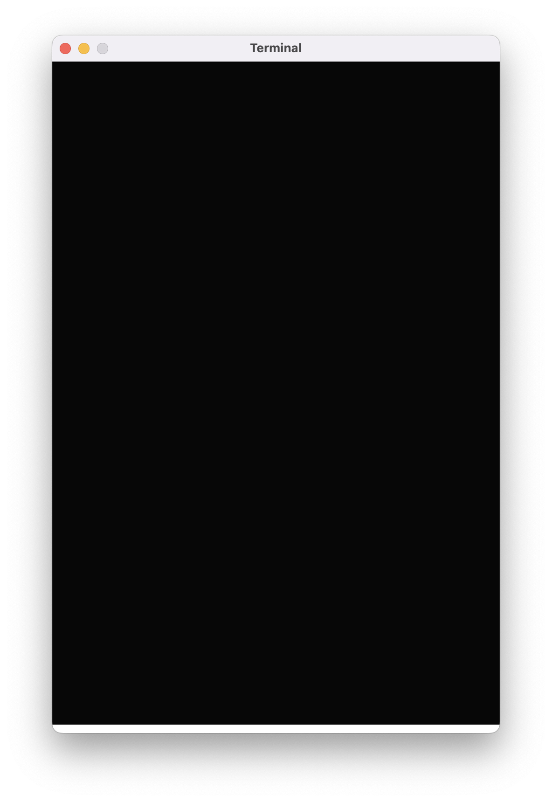

Na poprzednich zajęciach animowaliśmy Matrix’owy deszcz liter. Dziś pobawimy się w piromanów i napiszemy animację płomieni.
Okienko
Podobnie, jak przy Matrix’owych animacjach, zaczniemy od narysowania pustego okienka. Użyjemy stałych do określenia szerokości i wysokości okna – będziemy potrzebować tych wartości później. Do rysowania płomieni nie będziemy używać żadnych specjalnych znaczków. Zamiast tego będziemy wypisywać różnokolorowe spacje, a więc każdy znak naszego terminala będzie osobnym pikselem (dość sporym i prostokątnym, ale wciąż pikselem). Nasze okno powinno być zatem duży, a rozmiar czcionki – mały:
val SZEROKOSC = 120
val WYSOKOSC = 80
fun main() = terminal(
widthInTiles = SZEROKOSC,
heightInTiles = WYSOKOSC,
fontSize = 8
) {
}
Paleta kolorów
W przypadku Matrix’owych animacji paletę kolorów dla smug ciągnących się za spadającymi tworzyliśmy samodzielnie. W dzisiejszym programie wykorzystamy paletę z gry Doom z 1993 roku. Możecie wkleić poniższy fragment przed funkcją main:
val PALETA = listOf(
Color(0x07, 0x07, 0x07),
Color(0x1f, 0x07, 0x07),
Color(0x2f, 0x0f, 0x07),
Color(0x47, 0x0f, 0x07),
Color(0x57, 0x17, 0x07),
Color(0x67, 0x1f, 0x07),
Color(0x77, 0x1f, 0x07),
Color(0x8f, 0x27, 0x07),
Color(0x9f, 0x2f, 0x07),
Color(0xaf, 0x3f, 0x07),
Color(0xbf, 0x47, 0x07),
Color(0xc7, 0x47, 0x07),
Color(0xDF, 0x4F, 0x07),
Color(0xDF, 0x57, 0x07),
Color(0xDF, 0x57, 0x07),
Color(0xD7, 0x5F, 0x07),
Color(0xD7, 0x67, 0x0F),
Color(0xcf, 0x6f, 0x0f),
Color(0xcf, 0x77, 0x0f),
Color(0xcf, 0x7f, 0x0f),
Color(0xCF, 0x87, 0x17),
Color(0xC7, 0x87, 0x17),
Color(0xC7, 0x8F, 0x17),
Color(0xC7, 0x97, 0x1F),
Color(0xBF, 0x9F, 0x1F),
Color(0xBF, 0x9F, 0x1F),
Color(0xBF, 0xA7, 0x27),
Color(0xBF, 0xA7, 0x27),
Color(0xBF, 0xAF, 0x2F),
Color(0xB7, 0xAF, 0x2F),
Color(0xB7, 0xB7, 0x2F),
Color(0xB7, 0xB7, 0x37),
Color(0xCF, 0xCF, 0x6F),
Color(0xDF, 0xDF, 0x9F),
Color(0xEF, 0xEF, 0xC7),
Color(0xFF, 0xFF, 0xFF),
)
Model danych
Dla każdego “piksela” na naszym ekranie będziemy przechowywać jej “poziom ciepła”: liczbę od 0 do 35. Te liczby nie wzięły się z kosmosu: mamy dokładnie 36 barw w naszej palecie, więc liczby 0..35 odpowiadają indeksom w tej tablicy. Poziom 0 oznacza prawie całkowicie wygaszoną kratkę, poziom 35 to kratka rozżarzona do białości.
Proponuję przechowywać te dane w zagnieżdżonej liście, tj.: liście linijek, gdzie każda linijka to lista poziomów ciepła kratek w tej linii:
val ekran: MutableList<MutableList<Int>>
Początkowo musimy wypełnić wszystkie kratki wartością 0, poza dolną linią, którą wypełnimy wartościami 35. Będzie to źródło ciepła i płomieni.
for (y in 1..WYSOKOSC) {
val linijka = mutableListOf<Int>()
for (x in 1..SZEROKOSC) {
val pikselek = if (y == WYSOKOSC) PALETA.lastIndex else 0
linijka.add(pikselek)
}
ekran.add(linijka)
}
W powyższym fragmencie kodu są dwie rzeczy, na które chciałbym zwrócić waszą uwagę.
Po pierwsze, dla ostatniej linijki zamiast po prostu wartości 35 używamy własności PALETA.lastIndex, czyli odpytujemy paletę barw o indeks ostatniego koloru. Dzięki temu nawet po zmianie palety nasz program będzie działał poprawnie.
Po drugie, do stałej val pikselek przypisujemy… if..else‘a? Taki manewr nie jest dozwolony w wielu językach programowania, ale akurat w Kotlinie if..else oraz when są wyrażeniami, czyli można ich używać wszędzie tam, gdzie spodziewalibyśmy się wywołania funkcji, użycia stałej lub zmiennej, albo po prostu stałej wartości wpisanej bezpośrednio w kodzie.
Rysowanie ekranu
Skoro mamy już przygotowane dane dla całego ekranu, czas wyrysować wszystko. Co prawda nie będziemy jeszcze nic animować, ale nauczeni doświadczeniem z tworzenia poprzednich animacji, zastosujemy trik z kartką i pojedynczym print, aby uniknąć później mrugania ekranu:
var kartka = ""
kartka += Ansi.wyczyśćEkran()
for (y in 1..WYSOKOSC) {
kartka += Ansi.przesuńKursor(1, y)
val linijka = ekran[y - 1]
for (x in 1..SZEROKOSC) {
val pikselek = linijka[x - 1]
val kolorPiksela = PALETA[pikselek]
kartka += Ansi.kolorTła(kolorPiksela)
kartka += ' '
}
}
print(kartka)
Wypisujemy ekran linijka po linijce, dla każdej linijki najpierw przechodząc na jej początek przy użyciu Ansi.przesuńKursor, a potem rysując różnokolorową spację dla każdego pikselka w linijce. Jeśli nie macie w swojej klasie Ansi metody kolorTła, wróćcie do materiałów z zajęć nr 9.
Zauważcie też, że pobierając linijkę z listy ekran albo piksel z linijki, musimy od y i x odjąć 1. Listy indeksowane są od 0, a więc dla pierwszego wiersza, czyli dla y równego 1, musimy pobrać 0-wy element.
Po uruchomieniu programu powinniście zobaczyć czarne okienko z białą kreską na dole:

Pętla animacji…
Skoro mamy coś animować, opakujmy rysowanie ekranu w pętlę:
do {
var kartka = ""
kartka += Ansi.wyczyśćEkran()
for (y in 1..WYSOKOSC) {
kartka += Ansi.przesuńKursor(1, y)
val linijka = ekran[y - 1]
for (x in 1..SZEROKOSC) {
val pikselek = linijka[x - 1]
val kolorPiksela = PALETA[pikselek]
kartka += Ansi.kolorTła(kolorPiksela)
kartka += ' '
}
}
print(kartka)
Thread.sleep(16)
animujOgień(ekran)
} while (true)
Po wyrysowaniu kartki dodałem opóźnienie przy użyciu funkcji Thread.sleep(…). Użyta wartość 16 milisekund bierze się z częstotliwości odświeżania ekranu 99% nie-gameing’owych monitorów, które są w stanie wyświetlić 60 klatek na sekundę (1000ms / 60 = 16.66(7)ms). Nie ma sensu częściej wywoływać print(kartka) – monitor i tak nie będzie w stanie tego wyświetlić.
Ostatnia rzecz w głównej pętli animacji to wywołanie funkcji animujOgień. To właśnie ona będzie “sercem” naszego programu. Przekażemy tam ekran i wewnątrz tej funkcji będziemy dokonywać w nim zmian, które sprawią, że nasze płomienie ożyją.
…i faktyczna animacja!
Podstawowa idea jest taka, że każda kratka “ogrzewa” kratkę powyżej. Oczywiście, ciepło nie zostanie w 100% przeniesione, więc będziemy trochę zmniejszać poziom ciepła ogrzewanych kratek. Przejedźmy po wszystkich liniach poza ostatnią (to będzie palenisko będące źródłem ciepła) i ustawmy poziom ciepła na wartość o 1 mniejszą niż poziom kratki poniżej:
fun animujOgień(ekran: MutableList<MutableList<Int>>) {
// dla każdej linijki oprócz ostatniej
for (y in 1..(WYSOKOSC - 1)) {
// dla każdego pikselka
for (x in 1..SZEROKOSC) {
// popatrz na kratkę poniżej
val kratkaPoniżej = ekran[y][x - 1]
val nowaWartość = (kratkaPoniżej - 1).coerceAtLeast(0)
// ustaw nową wartość dla kratki
ekran[y - 1][x - 1] = nowaWartość
}
}
}
Podobnie jak przy rysowaniu, skoro “jedziemy” po przedziałach 1..WYSOKOSC i 1..SZEROKOSC, piksel, którym obecnie się zajmujemy to ekran[y - 1][x - 1], a piksel poniżej to ekran[y - 1 + 1][x - 1], czyli po prostu ekran[y][x - 1].
Musimy pamiętać o tym, żeby nie wstawić do ekranu żadnej wartości ujemnej! Nasz “poziom ciepła” zapisany dla każdej kratki musi być prawidłowym indeksem palety kolorów. Do tego właśnie służy wywołanie coerceAtLeast(0): “coerce” to po angielsku “wymuszać”, zatem funkcja Int.coerceAtLeast(0) zapewni, że nowaWartość nigdy nie będzie ujemne:
20.coerceAtLeast(0) // 20
(-15).coerceAtLeast(0) // 0
Doom… tęcza?
Efekt działania tego programu nie jest zbyt ciekawy. Po pierwsze miał być ogień, a wyszło coś takiego:

Po drugie, animacja okrutnie się ślimaczy, osiągamy co najwyżej kilka klatek na sekundę.
Na tym zakończymy dzisiejsze zajęcia. Na następnym spotkaniu zastanowimy się, czemu nasz program tak wolno działa, a potem popracujemy nad ulepszeniem efektu animacji.